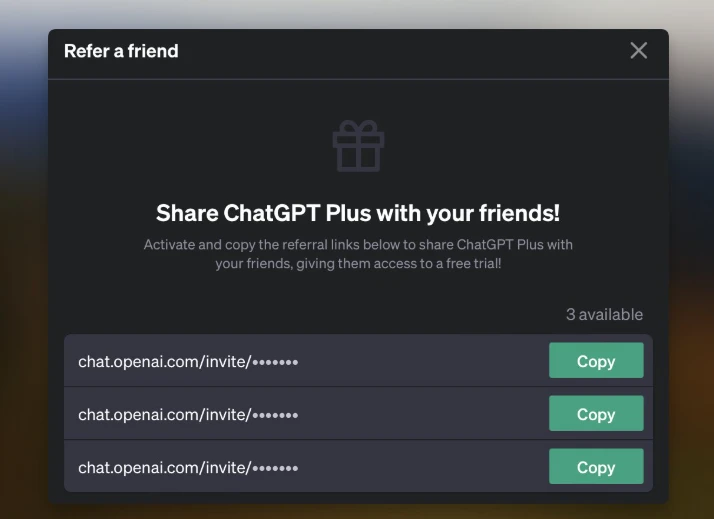
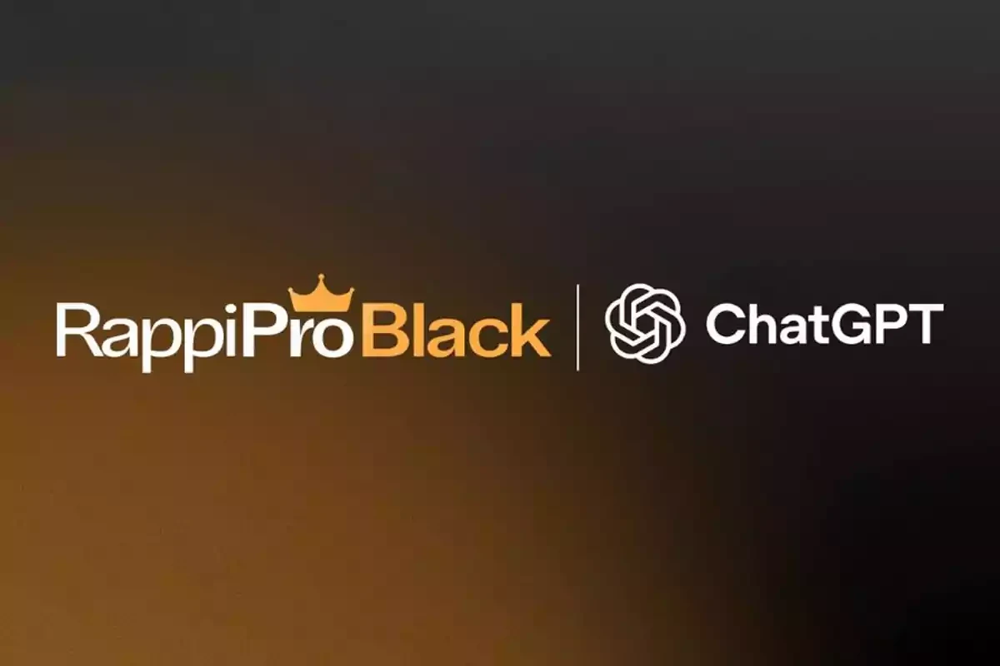
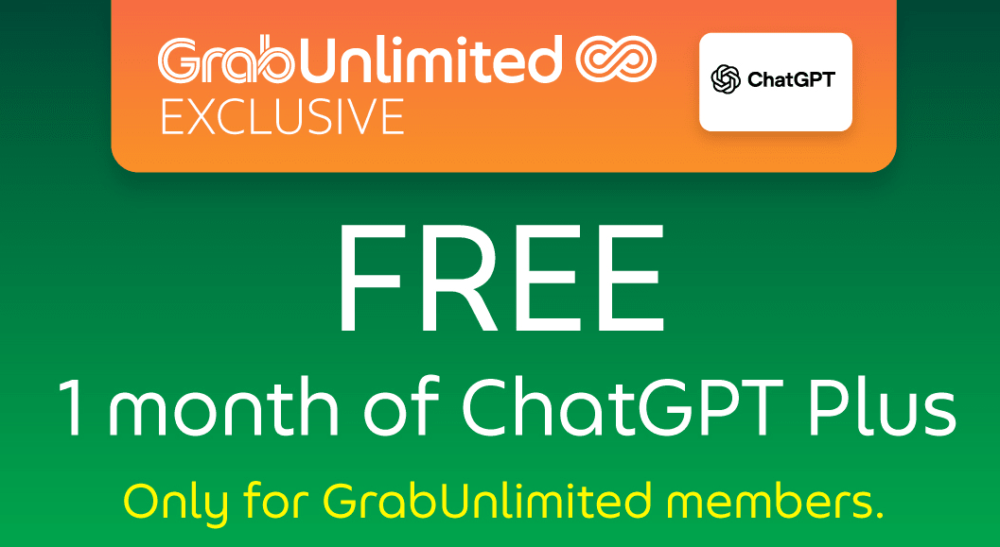
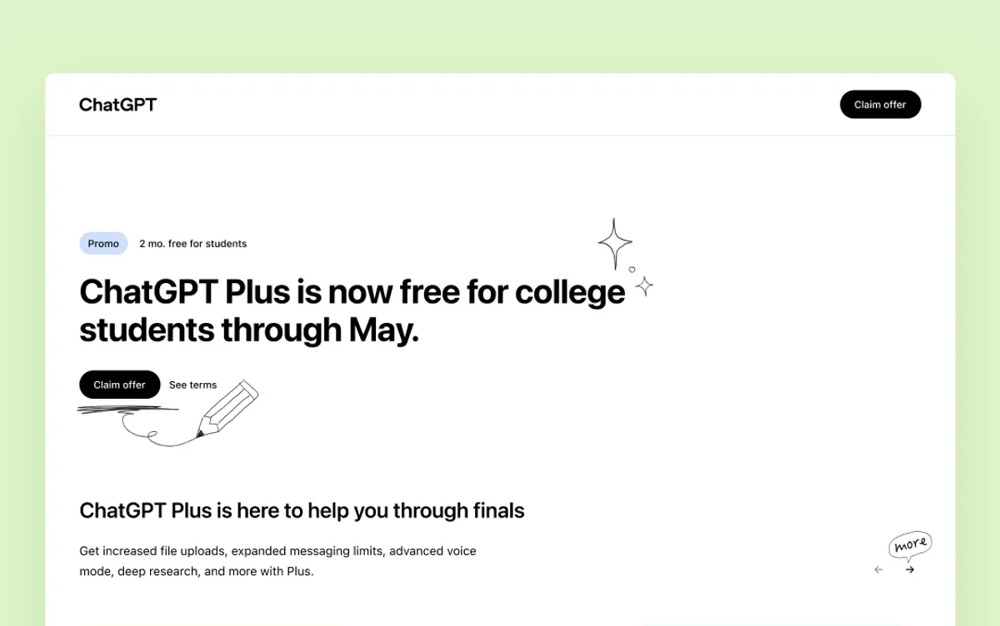

如何在 2026 年免费获得 ChatGPT Plus（10 种行之有效的方法）

根据 DemandSage 统计，截至 2026 年，全球约有1000 万用户 订阅了 ChatGPT Plus ，并且这一数字仍在快速增长。随着 8 月份 GPT-5 的正式发布，Plus 版本的功能优势更加凸显。
然而，ChatGPT Plus 每月 20 美元的订阅价格仍然让许多用户望而却步。尽管互联网上充斥着各种所谓的免费访问方式，例如"邀请码"和"破解插件"，但这些方式通常不仅无效，还隐藏着安全风险。
为了帮助你找到真正可行的方案，我们对网上流传的各种方法进行了全面的评估和测试。在剔除高风险和虚假宣传的方法后，我们找到了几种 真实、安全且合规的 途径，帮助你轻松访问免费的 ChatGPT Plus 服务。
ChatGPT Free 和 Plus 之间有什么区别
在找到合适的免费访问方式之前，务必了解 Plus 比免费版的优势，并确定ChatGPT Plus 是否符合你的需求。这样，你才能决定它是否真的值得一试。
ChatGPT 免费版本提供的功能
免费版支持 日常对话 和 基本任务处理 。对于需要更深层次推理的问题，你还可以每天使用一次 GPT-5 思维模式。
它包含语音对话、文件上传和图像生成功能。但是，消息配额和一些高级功能存在限制。高峰时段还可能遇到排队或限流的情况。
总体而言，免费版满足轻度使用需求，让用户体验ChatGPT的核心功能，但在功能完整性 和 使用稳定性 方面有所欠缺。
ChatGPT Plus 优势
升级到 Plus 版可解锁免费版中完全不可用或受限的一系列功能：
- 更高的使用限制 ：Plus 用户每 3 小时最多可发送 160 条消息，而免费用户每 5 小时最多可发送 10 条消息。Plus 用户可以访问 GPT-5，主动切换到 GPT-4o，并随时使用思考模式。这使其非常适合长时间对话和复杂推理。
- 更强大的多模态功能 ：Plus 用户每 3 小时最多可生成 50 张图片，而免费用户每天仅能生成 2-3 张图片。Plus 用户还可以使用 Sora 视频功能，进一步扩展 AI 使用场景。
- 更快的响应时间 ：在高峰时段，Plus 用户享有优先访问权，确保更快、更稳定的响应，不受服务器拥塞限制。
- 更多高级功能 ：包括创建和使用自定义 GPT、访问 ChatGPT 代理以及更丰富的任务和项目管理工具，以实现更高效的工作流程。
ChatGPT Free 与 Plus 对比
总体而言，ChatGPT 免费版和 Plus 之间的区别主要集中在以下几个关键方面：
| 物品 | 自由的 | Plus（20 美元/月） |
|---|---|---|
| 消息限制（GPT-5） | 每 5 小时约 10 次 | 每3小时约160 |
| 消息限制（GPT-5 思考） | 每天仅自动触发一次 | 可手动选择，每周最多约 3，000 个 |
| 旧款 | 无法使用 | 可以手动切换到 GPT-4o |
| 响应速度 | 繁忙时段通常限制 | 高峰时段优先访问，响应更快 |
| 高级功能 | 有限制的基本工具 | 完全访问内存、浏览、文件上传、GPT、插件和语音 |
| 代理功能 | 无法使用 | 可用的 |
| Sora 视频生成 | 无法使用 | 可用的 |
由此可见，ChatGPT 免费版与 Plus 之间的差距不仅仅在于模型使用限制或响应速度。Plus 提供的先进工具、交互灵活性以及整体体验往往决定了你使用时的效率和舒适度。
虽然普通用户可能不会发现这些功能有太大的价值，但如果你依靠 ChatGPT 进行写作、研究、内容创作或类似任务，这些功能通常会在效率和用户体验方面发挥重要作用。
你可以在 2026 年免费获得 ChatGPT Plus 吗？
答案是肯定的 。OpenAI 确实通过试用邀请、教育折扣和促销合作等方式提供免费访问机会。然而，这些机会通常有 时间限制，或者只对 特定群体 开放。
ChatGPT Plus 于 2023 年首次推出时，由于其独特的成本结构，它并 没有像许多其他程序那样提供为期一个月的免费试用。正如 OpenAI 首席执行官 Sam Altman 所指出的，运行高级 AI 模型的计算成本" 高得惊人"。
这使得大规模免费试用在经济上不可持续，而付费订阅对于支付高昂的运营成本和支持未来的改进至关重要。
随着人工智能竞争的加剧，OpenAI 变得更加 灵活 。它现在为开发人员提供免费的 API 积分，通过大学进行学术试验，并与公司建立合作伙伴关系，将 Plus 作为员工福利。
这些举措扩大了 ChatGPT Plus 的用户群，让更多人体验先进的人工智能，并使商业模式保持可持续性。
如何免费获取 ChatGPT Plus
ChatGPT Plus 免费试用邀请
免费体验 Plus 最直接的方式来自于OpenAI 官方的邀请系统。符合条件的 ChatGPT Plus 用户可以生成有限数量的邀请码,为其他用户提供 7-14 天 的完整 Plus 访问权限。
另外，拥有推荐权限的用户可以在 ChatGPT 界面左下方找到" 邀请好友"选项，生成专属邀请链接进行分享。
作为受邀用户，请记住以下几点：
- 如何获取 ：首先询问你周围的 Plus 用户是否有可用的邀请名额。你也可以查看 Reddit 的 ChatGPT 讨论区或 X 上的相关主题，人们经常在这些地方分享链接。
- 要求 ：注册时需要关联信用卡，但试用期间无需支付任何费用。试用到期前，你会收到 OpenAI 发送的提醒邮件，并且可以随时取消。
- 时间限制：大多数邀请链接仅在 48 小时 内有效，因此请尽快激活。请务必验证链接是否指向 OpenAI 的官方域名，以免被钓鱼网站攻击。
Rappi Pro 黑色合作伙伴关系
除了官方邀请之外，拉美外卖平台 Rappi 也与 OpenAI 展开合作。从 2025 年 7 月 15 日至 2026 年 1 月 15 日 ，Rappi Pro Black 订阅用户可获得 6 个月 的免费 ChatGPT Plus 访问权限，总限额为 30 万个名额 。
注册 Rappi Pro Black 后，用户可以通过应用程序或电子邮件激活 ChatGPT Plus。通常在激活后 48 小时内，你会收到一封电子邮件，其中包含可在 ChatGPT 帐户中兑换代码的链接。
现有的 Pro Black 会员应尽快领取，以免名额售罄。非订阅者只需支付8-11 美元 即可注册，比直接购买 ChatGPT Plus 便宜得多。
请记住，你必须维持 Rappi Pro Black 订阅整整 6 个月，否则你的 ChatGPT Plus 福利也将被取消。
Grab 东南亚合作伙伴关系
新加坡超级应用Grab 也与 OpenAI 合作，为东南亚用户提供服务。订阅 GrabUnlimited 后，用户可获得额外福利，包括 1 个月的免费 ChatGPT Plus 访问权限 。
GrabUnlimited每月 仅需约6 美元，远低于 ChatGPT Plus 官方 20 美元的月费。会员还享有 Viu Premium 和独家旅行折扣等其他福利。
该计划目前覆盖 新加坡、马来西亚、泰国、印度尼西亚和菲律宾 ，具体条款因市场而异。如果你位于这些国家/地区，请留意 Grab App 中的促销信息。
环球巴士 ChatGPT Plus 账户

相比之前提到的官方邀请或者合作模式， 环球巴士 的做法更加简单稳定 ，通过订阅共享的方式，将官方服务的费用分摊给多个用户，从而大幅降低个人成本。
为了验证平台的可靠性，我在测试期间连续使用了一个月。整体体验非常流畅。登录后，可以直接访问 GPT-5 对话、语音交互等功能。响应速度与官方订阅服务相当，没有遇到任何断线或配额限制的情况。
价格方面，环球巴士 的ChatGPT 共享账户价格在 7 美元左右，仅为官方 20 美元售价的三分之一，而且这种方式没有试用或促销的时间限制， 更适合长期使用 。
学生教育折扣计划
2025年3月至5月期间，OpenAI在美国和加拿大开展了一项学生折扣试点项目。当时，符合条件的全日制或非全日制大学生可以通过SheerID验证身份，获得 两个月的ChatGPT Plus免费试用。
OpenAI 称其为一项"实验性消费者计划"，并在条款中暗示，类似的折扣未来可能会扩展到更多学校和国家。虽然这项活动已于 5 月结束，但这表明 OpenAI 正在探索 针对学生用户的长期折扣 。
如果你是学生，请关注校园公告或 OpenAI 官方更新。折扣恢复后，你将再次有机会免费领取 ChatGPT Plus。
ChatGPT 促销代码和限时优惠
OpenAI 偶尔会通过合作伙伴分发促销代码。用户可以通过短信或合作伙伴门户领取这些代码，然后使用专属链接登录或创建 ChatGPT 帐户，即可享受自动结账折扣。
这些优惠通常出现在与大型科技公司联合促销或 ChatGPT 产品重大升级 期间。它们的形式包括首月免费、限时折扣或额外使用时间。它们通常仅适用于新用户，并且有一定的资格限制和有效期。
要抢先获取这些信息，请关注 OpenAI 的官方渠道、LinkedIn 以及 各大科技媒体 。务必核实信息来源的可靠性，避免虚假链接或诈骗。
OpenAI API 新用户免费积分
对于具有一定技术背景的用户，OpenAI 为新用户提供的免费 API 积分是另一个不错的选择。注册 API 帐户后，新用户可获得 5-18 美元 的免费使用积分。虽然这不是直接的 ChatGPT Plus 订阅，但你可以通过 API 调用体验 GPT-5 和其他高级模型。
申请流程很简单：
- 访问 platform.openai.com 注册开发者账户
- 完成电话验证和身份确认
- 在仪表板中查看你的免费积分
免费积分的有效期取决于你的使用频率。对于日常对话，它可以支持大约 200-300 轮 GPT-5 对话，足够轻度用户使用一个月。
如何免费获取 ChatGPT-5
如果你获取 ChatGPT Plus 的主要目的只是为了使用 GPT-5，而并不特别需要其他功能，那么实际上有更简单的替代方案，可让你免费使用 ChatGPT-5，而无需购买 Plus。
如何通过 环球巴士 使用 ChatGPT
环球巴士是一个多AI模型平台，新用户注册后会自动获得 免费积分 ，可直接用于 GPT-5 对话。
除了GPT-5之外，你还可以体验包括Claude 4 、 Gemini 2.5 Pro 在内的多种主流AI模型，轻松比较它们在不同任务中的表现。
即使免费积分用完，环球巴士 仍然物超所值。只需 11 美元即可获得 240 次 GPT-5 对话，比官方订阅便宜得多。
如何通过 Microsoft Copilot 免费使用 ChatGPT
自 2025 年 8 月 7 日 起，GPT-5 已完全集成到 Microsoft 365 Copilot 中。无论你是否拥有 Copilot 许可证，都可以直接通过 Microsoft 365 的 Copilot 频道体验 GPT-5，但访问级别有所不同：
拥有 Copilot 许可证的用户 可获得 优先访问权限 ，并可在 Word、Outlook、Teams 和其他应用程序中充分使用 GPT-5，包括对话和高级功能。
没有许可证的用户 仍然可以使用 GPT-5，但只能使用 标准访问权限 。这意味着功能和稳定性会受到限制，每日对话限制会根据服务器容量和高峰使用时间而波动。
如何通过 Perplexity AI 免费使用 ChatGPT
如果你更喜欢在搜索和信息检索场景中使用 AI，你可以 通过 Perplexity AI 免费使用 GPT-5 。
免费用户每天可获得 5 次专业搜索查询，你可以从模型选项中直接访问 GPT-5。
升级到Perplexity Pro不仅可以完全解锁 GPT-5，还能访问 Gemini 2.5 Pro、Grok 4 和其他顶级型号。只需一次订阅，即可获得多个平台的核心功能。
比较免费聊天GPT方法
读完所有这些"免费的 ChatGPT"方法后，你可能会感到有些不知所措。为了帮助你更轻松地进行比较，我们将常用方法整理成一个比较表，清晰地显示了每种方法的持续时间、优点和局限性，以便你快速确定哪种方法最适合你。
| 渠道 | 期间 | 优点 | 缺点 | 等级 |
|---|---|---|---|---|
| 邀请试用和 API 积分 | 7-14 天 & 5-18 美元积分 | 官方渠道 | 短期 | ⭐⭐⭐ |
| Rappi 和 Grab 促销 | 6个月和1个月 | 长期、正式的合作关系 | 需要订阅，区域限制 | ⭐⭐⭐⭐ |
| 环球巴士 ChatGPT Plus | 长期 | 价格低廉，长期使用稳定 | 非常受欢迎，可能会售完 | ⭐⭐⭐⭐⭐ |
| 学生折扣 | 2个月 | 官方渠道 | 仅限学生，目前已结束 | ⭐⭐ |
| ChatGPT 促销代码 | 各不相同 | 官方折扣，形式多样 | 难以获得，并不总是有效 | ⭐⭐ |
| Perplexity | 长期 | 始终可用 | 功能有限，每日上限 | ⭐⭐⭐ |
如果你只想短期试用，官方邀请是一个可靠的选择。在受支持的地区，Rappi 或 Grab 等合作计划也能提供不错的选择。对于长期使用，环球巴士 提供了最稳定、最经济的解决方案。
总的来说，每种方法都有自己的优势，因此关键在于根据你的特定需求和使用频率进行选择。
结论
确实存在免费访问 ChatGPT Plus 的方式，无论是通过 OpenAI 的不定期试用邀请、合作伙伴限时促销，还是学生教育折扣。这些方式可以让你短期内访问 GPT-5 的完整功能。
但如果你的目标是长期、稳定地使用 ChatGPT Plus，在亲自测试了各种方法之后，我还是建议通过环球巴士获取 ChatGPT Plus 账号。 安全 可靠 ，省钱又 省心 。
此外，通过Rita AI免费使用 ChatGPT也值得一试。这免去了不断寻找临时试用版的麻烦，让你在一个平台上体验多种 AI 模型，涵盖对话、图像生成、视频等，从而实现全面高效的工作。
如果将来出现新的免费频道，我会继续在此更新此信息，以便你随时了解最新的选择。
常问问题
ChatGPT 有免费试用版吗？
是的。OpenAI 会定期通过官方邀请或合作伙伴提供 ChatGPT Plus 免费试用。这些试用版提供完整的 GPT-5 访问权限，通常持续 7-14 天，有时在更新或促销期间会更长。
ChatGPT Premium 对学生免费吗？
目前，学生折扣尚无永久性优惠。不过，OpenAI 已于 2025 年春季进行了一项试点，为符合条件的美国和加拿大大学生提供经过 SheerID 验证后两个月的免费 ChatGPT Plus 服务。虽然该项目已结束，但它可能会扩展到更多学校和地区。
有没有办法免费获得 ChatGPT Plus？
常见的方式包括官方邀请试用、通过 Rappi、Grab 等平台的合作推广、高校教育优惠以及节假日发放的优惠码等。通过这些渠道，用户通常可以获得 1-6 个月的免费 ChatGPT Plus 访问权限。